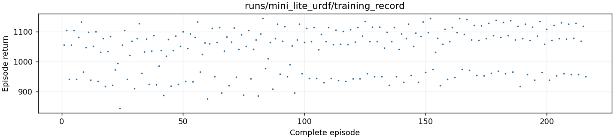

日志位于 logs/training，新训练日志从 runs 自动合并。各阶段奖励版本和回合长度不同，不直接比较总奖励。只统计完整训练回合，不包含验收和录像。页面可能包含旧机器人训练；CSV 的 robot_model 列区分模型，不能把旧记录作为当前 Mini Lite 的训练结果。
完整回合总数：216

return 是每步环境奖励相加的原始回报。CEM 若额外扣除抬脚或前进不足罚分，则 search_score 保存扣分后的搜索评分；两列含义不同。历史旧阶段没有额外扣分时两列相同。PPO Monitor 的 r 列为原始回报。